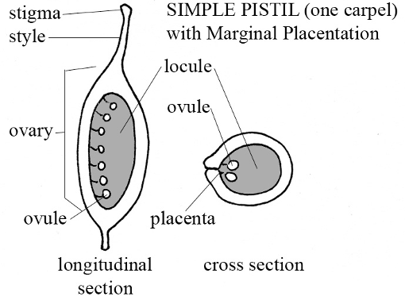
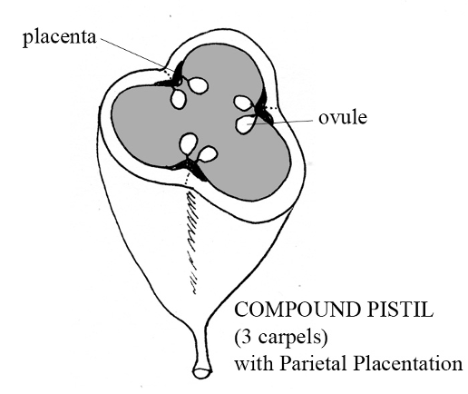
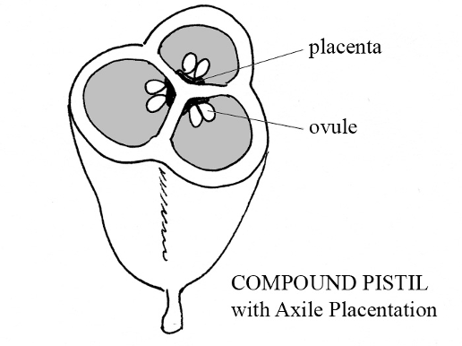
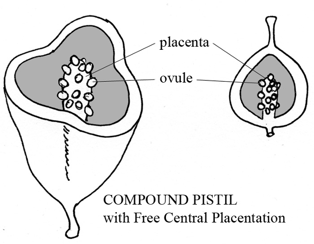
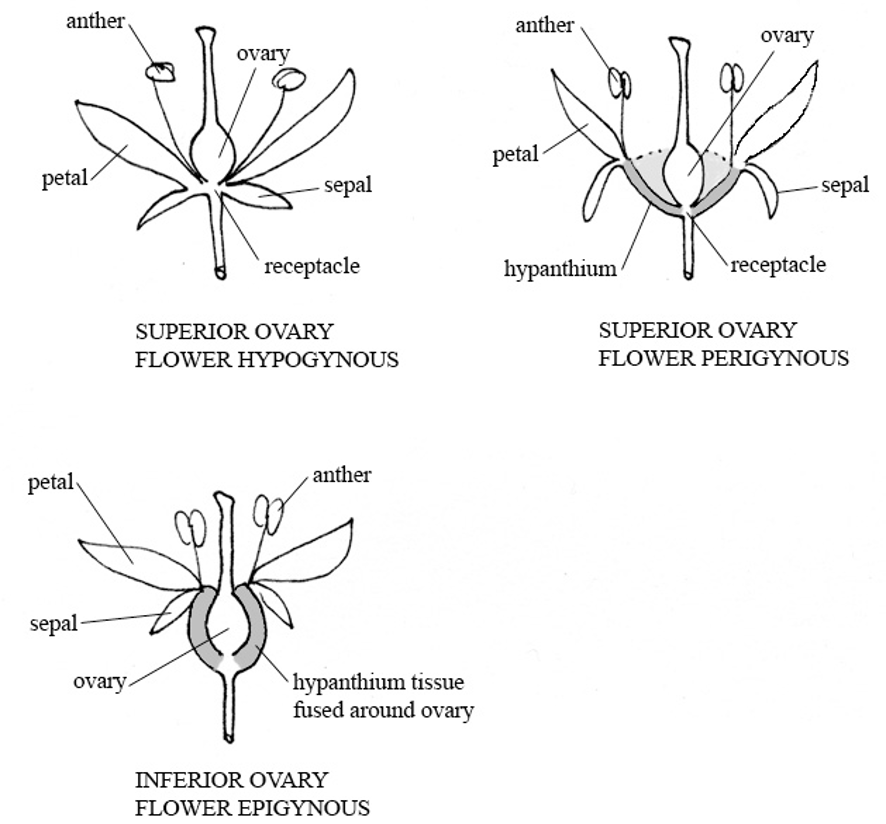

There is also a wiki glossary of common botanical terminology here.
Surfaces and Pubescence (hairs)
Ciliate = with a marginal fringe of hairs
Glabrate = nearly glabrous, or becoming glabrous with age
Glabrous = without pubescence of any kind, smooth
Glandular = having glands or small secretary structures
Glaucous = having a whitish waxy or powdery coating
Hirsute = with long, shaggy hairs
Pubescent = covered with hairs
Scabrous = rough to the touch
Scurfy = covered with scales
Stellate = with star shaped (branched) hairs
Tomentose = with densely matted soft hairs, wooly in appearance
Types of Placentation




Ovary Position and Flower Type

Common Inflorescence Types
Fruits
Simple Fruits
(Fruits developing from one ovary)
Fleshy fruits:
- Berry - entire fruit wall fleshy (may be from superior or inferior ovary).
- Examples: tomato, grape, cranberry, banana.
- Specialized berries:
- hesperidium: a berry with a tough leathery rind, a citrus fruit
- pepo: a one locular berry with a hard outer covering, a melon.
- Drupe - fruit wall (or pericarp) of 3 distinct layers, the outer skin like (exocarp), the middle fleshy (mesocarp), and the inner hard and woody (endocarp).
- Examples: cherry, peach, plum. The small drupes that form the aggregate fruits of raspberries and blackberries are called drupelets.
- Pome - fruit developing from an inferior ovary, with the seeds encased within a cartilaginous core, and the fleshy part consisting largely of the adnate hypanthium and receptacle.
Dry Indehiscent Fruits
(Not opening when mature, usually 1-seeded fruits)
- Achene - small, 1 seeded fruit, developing from a simple pistil, the seed attached to the ovary wall in only one place, that is, not fused with it.
- Examples: buttercup, the “seeds” of a strawberry; the term achene is also used for similar fruits that develop from 1 locular compound ovaries as in the sedges and Asteraceae.
- Cypsela - an achene-like fruit developed from an inferior 2-carpellate ovary as in the Asteraceae. Usually called achenes in floras and manuals.
- Utricle - achene like, but ovary syncarpous and ovary wall corky or bladdery.
- Examples: beet, Rumex (dock)
- Samara - a winged achene.
- Caryopsis (grain) - like an achene but ovary wall tightly fused to seed.
- Nut - ovary wall hard and woody, developing from a syncarpous ovary.
- Nutlet - a small, hard-walled, single-seeded “fruit” that develops from half of a carpel.
- Example: Lamiaceae, Boraginaceae
- Schizocarp - a fruit from a syncarpous ovary that splits into its separate but indehiscent carpels at maturity.
Dry Dehiscent Fruits
(Opening at maturity, usually with several seeds)
- Follicle - formed from 1 carpel (a simple pistil) and dehiscing along 1 suture.
- Examples: Aquilegia, Delphinium
- Legume - formed from 1 carpel and dehiscing along 2 sutures.
- Examples: Fabaceae.
- A legume that breaks crosswise into 1-seeded segments is called a loment
- Silique - formed from a 2-carpellate, 2-celled ovary with parietal placenta, and more than 3 times as long as wide.
- Silicle - a short silique, less than 3 times as long as wide.
- Capsule - dry, dehiscent fruits developing from syncarpous ovaries. They may dehisce by pores (Poricidal dehiscence), along the partitions or septa (septicidal dehiscence), directly into the locules or cavities (loculicidal dehiscence) or by a lid (circumscissile dehiscence).
Compound Fruits
(Fruits formed from multiple ovaries)
- Multiple Fruits - fruits developing from the coalescence of several ovaries from several separate flowers.
- Examples: pineapple, mulberry.
- Aggregate Fruits - fruits developing from the coalescence of several ovaries of one flower.
- Examples: raspberry, blackberry